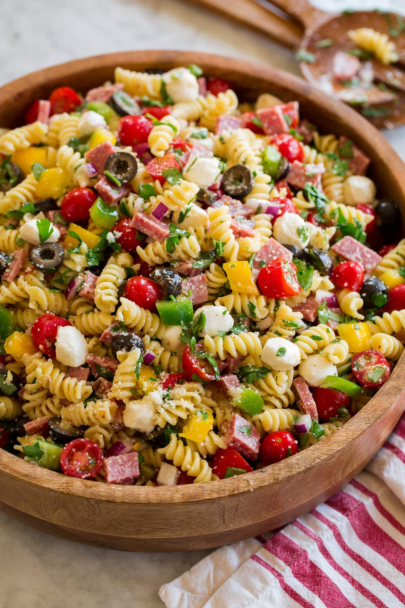

Quick Italian Pasta Salad

Description
Prep Time:
15 mins
Cook Time:
10 mins
Total Time:
25 mins
Servings:
12
Ingredients
- 1 (12 ounce) package tri-color rotini pasta
- ¾ pound Italian salami, finely diced
- ½ green bell pepper, sliced
- ½ red bell pepper, sliced
- ½ red onion, chopped
- 1 (6 ounce) can sliced black olives
- 8 ounces small fresh mozzarella balls (ciliegine)
- 1 cup Italian-style salad dressing
- 3 (.7 ounce) packages dry Italian-style salad dressing mix, or to taste
- ½ cup shredded Parmesan cheese
Steps
- Bring a large pot of lightly salted water to a boil. Cook rotini pasta at a boil until tender yet firm to the bite, about 8 minutes. Drain and rinse with cold water until cool.
- Combine pasta, salami, bell peppers, onion, mozzarella balls, and olives in a large bowl. Add salad dressing and toss to coat.
- Season pasta salad with dry salad dressing mix and stir to combine. Sprinkle with Parmesan cheese before serving.
Click here to go back to homepage.